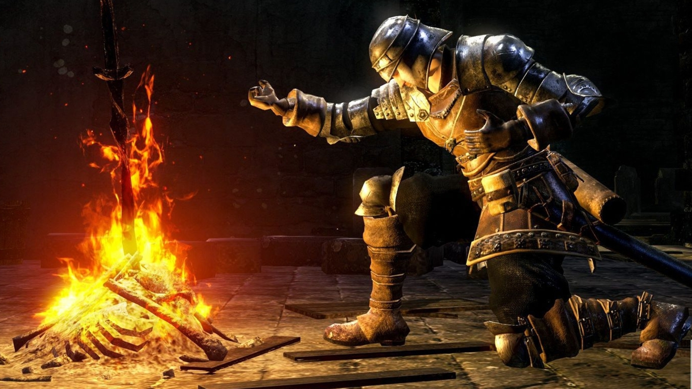
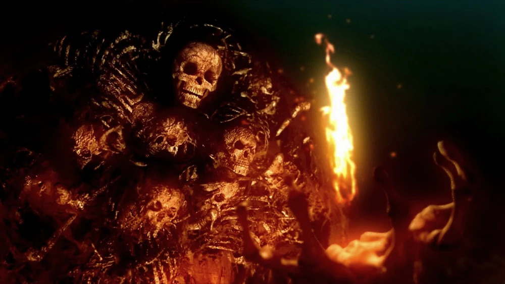
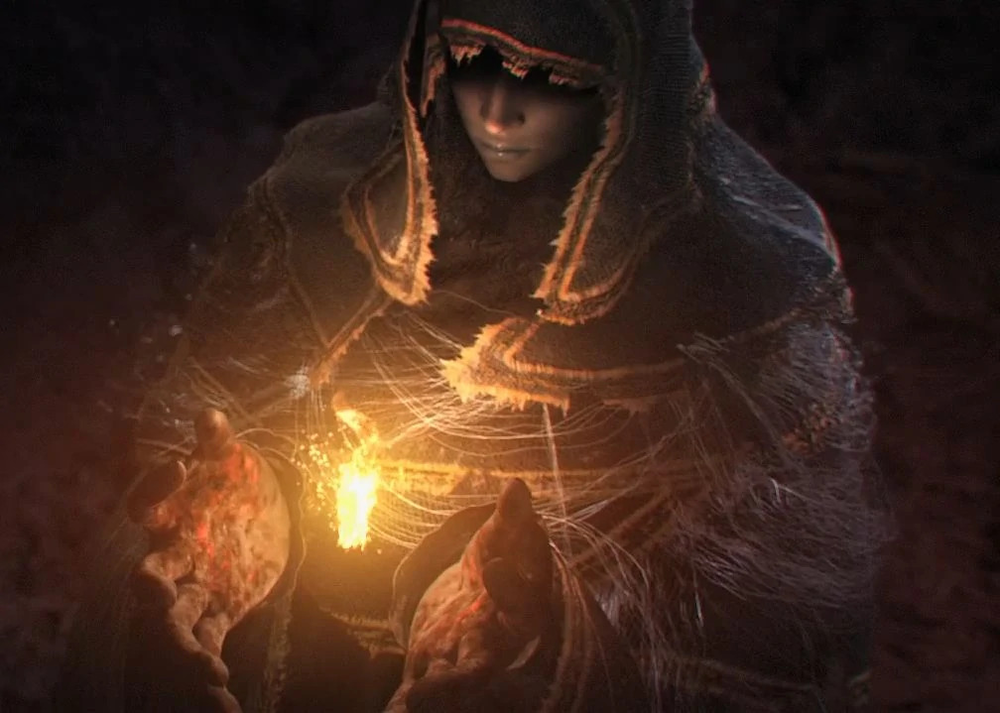
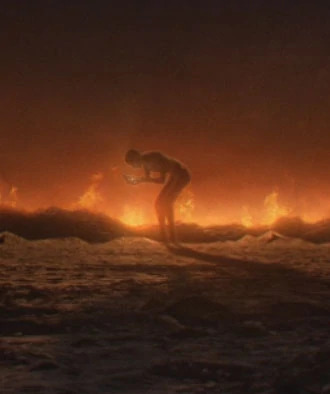

La Primera Llama

La primera llama nacio en la era antigua. Con ella llego la disparidad. Calor y Frio. Vida y Muerte. Y por
supuesto... Luz y oscuridad. Entonces ellos surgieron de la oscuridad y encontraron las almas de los dioses
dentro de las llamas
⇓
Gwyn

El Señor de la luz solar. Encontro en la llama el alma de la luz. Lo que le brindo el poder suficiente
para
declarar guerra a los Dragones Eternos
⇓
Nito

El primero de los muertos. En la llama obtuvo el alma de la muerte. Fue aliado de Gwyn durante su guerra
contra los dragones eternos. Sembro una miasma de muerte y enfermedad
para debilitar a los dragones.
⇓
Izalith

La bruja del caos, obtuvo en la llama el poder del mismisimo fuego. Ella y sus hijas se aliaron con gwyn
en
contra del reinado de los dragones. Con sus hijas tejio tormentas de fuego que dejaron el antiguo mundo
reducido a cenizas de las que renaceria uno nuevo.
⇓
El Furtivo Pigmeo

El más olvidado de los 4 grandes señores. Encontro en el fuego el alma más poderosa, el alma oscura, capaz
de
absorber a las demas. Desaparecio en el olvido, pero se cree que la humanidad es descendiente de él y poseen
un
fragmento del alma oscura. Los primero hombres fueron confinados a la ciudad anillada